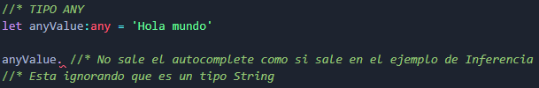
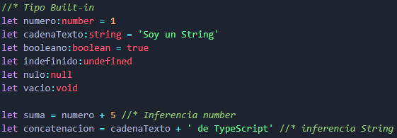

Como su nombre indica, todo en Typescript trata de tipos. Como Typescript es la versión tipificada de JS, se puede especificar tipos a las variables cuando se declaran.
Esto hace que el código sea más escalable y fiable, y se puede comprobar que el código se ejecuta correctamente antes del tiempo de ejecución.
Javascript está tipado dinámicamente, lo que significa que no conoce el tipo de su variable hasta el tiempo de ejecución y las variables pueden cambiar de tipo. Incluso si se cambian intencionadamente, a menudo surgen errores y fallos. Typescript ayuda con este problema añadiendo tipos estáticos al código.
- Tipo Any:
- Una variable puede ser de cualquier tipo. Si usamos este tipo va a IGNORAR el tipado de Typescript. 
- Tipo Built-in:
- Incluye los tipos de datos primitivos de Javascript (el número, la cadena, el booleano, el indefinido, el nulo y el vacío). 
- Tipo Compuestos:
- Estructuras de datos:
- User-defined:
Nota: Intentar escribir los menos tipos de datos posibles. Todo lo que pueda hacer automáticamente Typescript, dejar que lo haga.